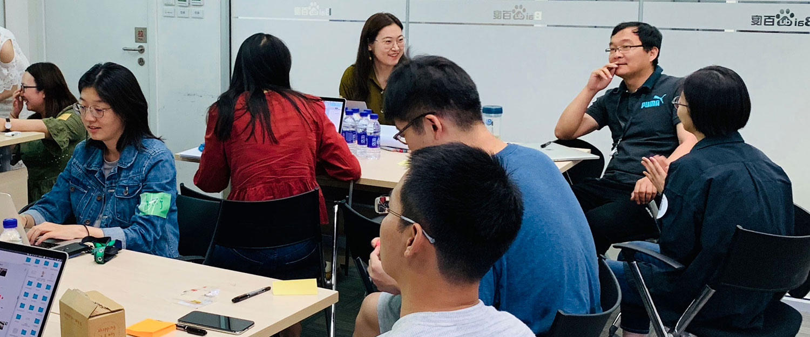
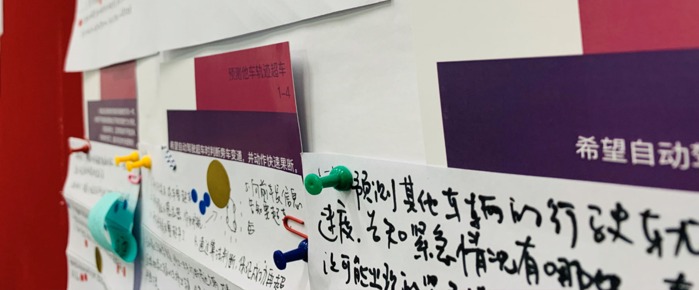
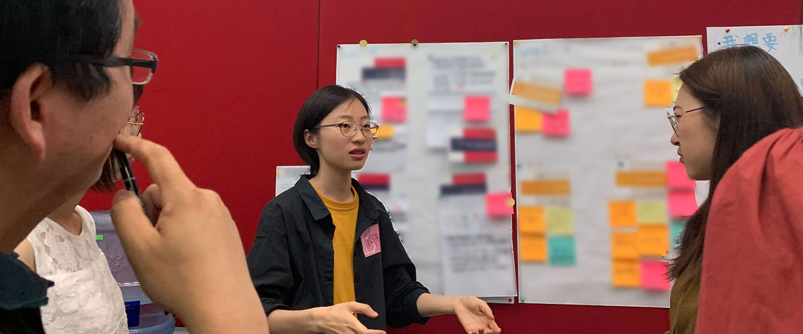
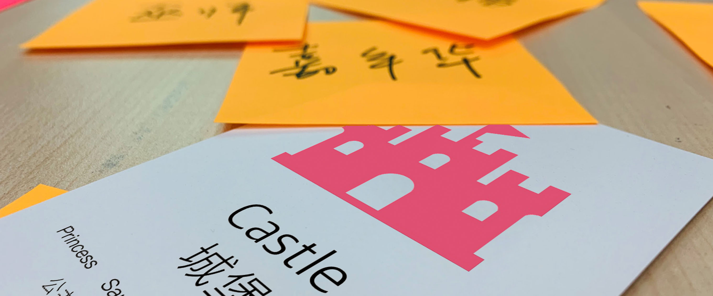
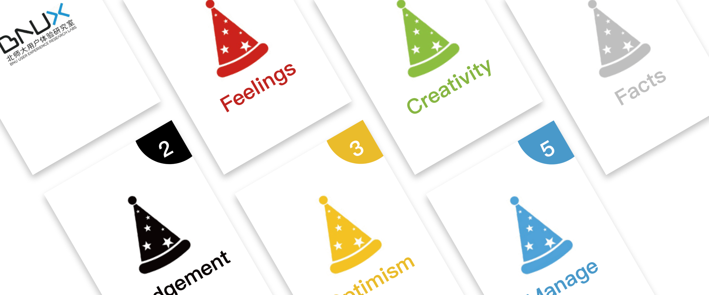

Two brainstorming sessions were held to enlighten insights and solutions on the user needs listing above. Designers, researchers, and developers joined in the session. Due to the time limitation of the workshop, only 10 scenario-user need card were randomly chosen for each group.

Brainstorming 1 : Paper Passing
This activity aims to share ideas of solutions to user needs from every member's perspective, gathering design solutions from different participants. Each paper was passed on among all participants in the same group for writing down ideas that meet the user need on specific scenario-user need card.

Evaluation 1 : Discussion
Ideas were collected and shared. Then the group voted to select those insights worth designing, using "I want" and "I need" as criteria.

Brainstorming 2 : Idea Association
This activity aims to make connections between seemingly irrelevant ideas. Participants write down ideas inspired by the given inspirational card, then tried to apply these ideas into design solutions to solve the corresponding user needs.

Evaluation 2 : Role Play Discussion
Participants randomly selected one role play card, then shared in group from the perspective of corresponding roles to judge the design solutions.
